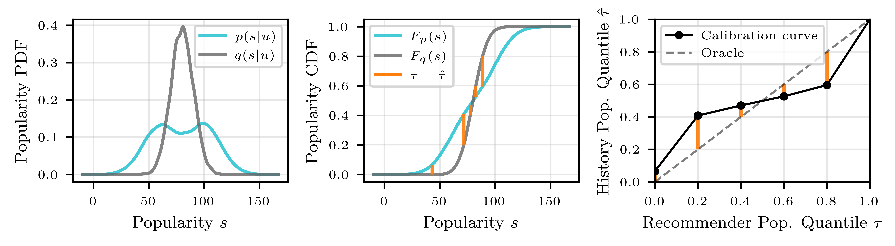
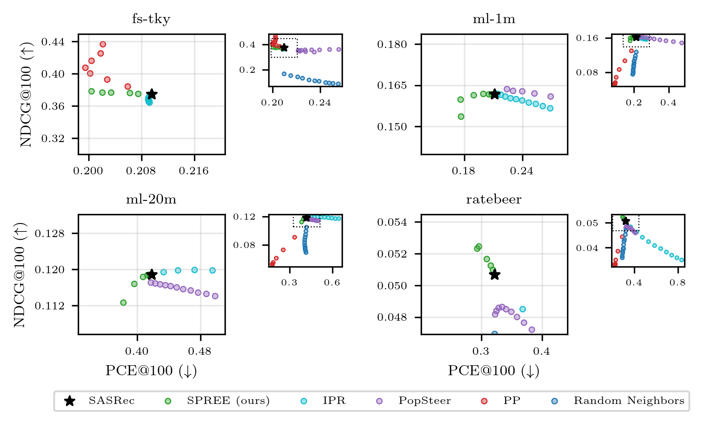
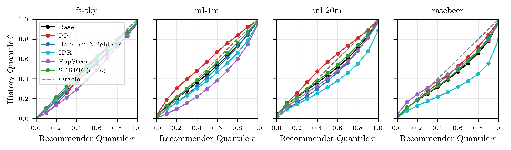

关心推荐“热门偏差”、又不想重训模型的团队值得读。这篇 Amazon Music 和阿姆斯特丹大学的论文换了一个角度看热门偏差：问题不是推荐整体太热门，而是推荐的热门程度和每个用户自己的口味对不上。它做了两件事。一是提出 PCE（Popularity Calibration Error，热门度校准误差），按分位数比较“用户历史里物品的热门度分布”和“推荐列表的热门度分布”。二是提出名为 SPREE 的方法，在推理时往 SASRec 的内部表示上加一个“热门方向”的向量，方向和力度按每个用户估出来的偏差决定，不用重训。在 4 个公开数据集上，按 NDCG@100 最多掉 10% 的约束取最强力度时，SPREE 把 PCE@100 降了 4% 到 16%；同样的方向不分用户统一加，PCE 在两个数据集上反而翻倍（表 4）。我认为它值得参考的是“对齐而不是一刀切降热门”这个目标，以及度量上的分位数做法；但实验只用了 64 维、3 层的小模型和公开数据集，偏差估计器在最小的数据集上 R² 只有 0.18。
它要解决什么问题？
推荐系统普遍偏爱热门物品，已经被反复讨论。常见的做法是把热门度整体压下来，比如按热门度给分数打折。论文认为这种做法可能和用户体验背道而驰：有的用户就是爱听排行榜金曲，有的用户只听小众乐队，统一降热门对前者是打扰，对后者也未必够。
所以作者把问题重新定义为“对齐”：每个用户历史里交互过的物品，热门度构成一个分布 ；模型给他的推荐，热门度构成另一个分布 。物品热门度 就是它在所有用户历史里被交互的总次数。理想的推荐系统应让 贴近 。
一个示意例子：用户甲的历史里一半是热门歌、一半是冷门歌，热门度分布有两个峰；推荐列表全是中等热门的歌。两者的平均热门度可能差不多，但推荐完全没覆盖他“两头都爱”的口味。
已有指标差在哪？
论文用测量理论梳理了已有的热门偏差指标，按“到底在量什么”分成三类：整个系统推荐了多热门的东西（如 ARP，即推荐物品的平均热门度）、曝光在物品之间有多集中（如覆盖率、基尼系数）、每个用户的推荐和历史差多少。这篇论文只关心第三类，并为它提出五条要求：
| 要求 | 含义 | PopLift | LogPopDiff | UPD | PCE | 校准曲线 |
|---|---|---|---|---|---|---|
| D1 方向 | 能分出推荐比历史更热门还是更冷门 | ✓ | ✓ | × | × | ✓ |
| D2 幅度 | 小的差异也能量出来 | ✓ | ✓ | × | ✓ | ✓ |
| D3 离散度 | 能分出推荐是否比历史更集中 | × | × | × | ✓ | ✓ |
| D4 尺度不变 | 不随用户数、交互量变化 | ✓ | × | ✓ | ✓ | ✓ |
| D5 抗离群 | 一个超热门物品不会拉偏结果 | × | × | ✓ | ✓ | ✓ |
PopLift 用推荐列表的平均热门度减去用户历史的平均热门度，再除以历史的平均热门度，得到一个相对差。LogPopDiff 先对每个物品的热门度取对数，两边各求平均后直接相减，不做归一化。两者都只看平均值，所以看不到离散度。LogPopDiff 用的是绝对差，交互总量一涨数值就跟着变，因此不满足尺度不变；PopLift 对原始热门度求平均，一个超热门物品就能把平均值拉高，LogPopDiff 取了对数会好一些，但同样受影响。UPD（用户热门度偏离度）把热门度切成低、中、高三档，再算两个分布的 Jensen-Shannon 散度，档内差异看不到，而且这个散度是对称的，推荐偏热门和偏冷门会得到同样的分数。
PCE：按分位数做校准
PCE 借用了回归模型里“分位数校准”的思路。对每个用户：
- 选 个分位水平 ，例如 0、0.2、0.4、0.6、0.8、1。
- 在这个用户的推荐列表里，找出 分位对应的热门度阈值 ，也就是推荐里有 比例的物品热门度不超过它。
- 统计用户历史里热门度不超过这个阈值的物品比例，记为 。
- 理想情况下 。PCE 是 个 的平均，取值 0 到 1，再对所有用户取平均。

用上面的用户甲手算一下。推荐全是中等热门，推荐的 20% 分位阈值已经是中等热门度，而用户历史里一半是冷门歌，都低于这个阈值，于是 ，比 0.2 高；到 80% 分位，阈值仍是中等热门，历史里只有那一半冷门歌低于它，，比 0.8 低。曲线先在对角线上方、再到下方，正好是图 2 右图的形状，说明推荐分布太窄。把曲线和对角线的差平方再平均，就是 PCE。
这样做有几个好处。分位只看物品的相对顺序，所以不受交互总量影响（D4），一个超热门物品也只占一个名次（D5）。分档的阈值取自每个用户自己的推荐分布，随这个用户的推荐变化；UPD 用的是全局固定的三档，一个用户的推荐很容易全落进同一档，档内的差异就量不出来。代价是平方之后丢掉了方向（D1），所以作者同时保留校准曲线，用来看偏差的方向和位置。
SPREE：在模型内部加一个“热门方向”
SPREE 作用在 SASRec 这类序列推荐模型上。SASRec 用几层 Transformer 编码用户历史，最后一层最后一个位置的输出就是用户向量 ，再和每个物品向量做点积打分，取前 个。
第一步，找热门方向。作者造了两组假用户：从最热门的 10% 物品里随机抽物品组成序列，得到 5000 个“主流用户”；从最冷门的 10% 里抽，得到 5000 个“小众用户”。把两组序列都喂进模型，记录每一层、每个位置的内部表示，算两组的平均值之差（小众减主流），归一化后就是热门方向 ，沿着 走意味着往冷门走。在哪一层、哪个位置加，用一个线性探针来选：哪里最容易把两组区分开就加在哪里，实际上通常就是最后一层最后一个位置。附录图 5 显示，过了补零区之后探针准确率接近 100%。
第二步，按用户决定方向和力度。只加一个固定的 ，所有用户都会被推向冷门，这正是论文要避免的。作者先定义每个用户的偏差：，取值在 -0.5 到 0.5 之间。 表示推荐比用户口味更热门， 表示推荐更冷门。然后在验证集上用 Lasso 回归，从模型内部表示预测 ，得到估计器 。这里的内部表示 ，就是第一步选中的那个干预点（某一层的某个位置）在加方向向量之前的表示：训练时取验证集用户在这个点的表示，以实测的 为目标；推理时取当前用户在同一个点、还没加向量的表示。推理时加的是 ：估计推荐偏热门，就往冷门推；估计偏冷门，符号反过来，往热门推；估计没有偏差，就几乎不动。
我的理解是，因为通常加在最后一层最后一个位置，加完之后的表示就是用户向量本身。按论文的公式，物品 的分数变成 ，相当于给每个物品加了一个“冷门分” ，再乘上一个因用户而异的系数。这个视角说明 SPREE 的改动其实很轻，也解释了作者在局限里说的一点：效果取决于物品向量空间里有没有热门度合适的邻居可以召回。
实验结果说明了什么
实验用 4 个公开数据集：Foursquare 东京签到（fs-tky）、MovieLens-1M、MovieLens-20M、RateBeer。底座是 3 层、64 维的 SASRec，每个数据集训 3 个种子取平均，按留一法评估。对比的都是推理时的方法：按热门度给分数打折的方法 IPR、把用户自己常交互的物品往前提的 PP、在用户向量附近随机取物品的 Random Neighbors，以及 PopSteer。PopSteer 先在冻结的 SASRec 最后一个位置的用户向量上训练一个稀疏自编码器，把用户向量展开成 512 个稀疏维度，从中找出编码热门度的那些维度，再按强度压低它们的取值。它对所有用户都往冷门方向压，属于一刀切的做法。

图 3 里只有 PP 和 SPREE 能稳定地把 PCE 降到底座以下，因为两者都在向用户历史看齐。PP 的代价是 NDCG 持续下降，只有在 fs-tky 上例外，因为签到数据重复性很高，推用户去过的地方本来就对。SPREE 在 fs-tky 和 ml-1m 上基本保住了准确率，在 RateBeer 上还略有提升。从图上看，ml-20m 上 SPREE 力度最大时 NDCG@100 从约 0.119 降到约 0.112。IPR 和 PopSteer 一刀切降热门，NDCG 小幅下降，PCE 反而上升。
图 4 的校准曲线把方向也画了出来。除了 fs-tky，底座在另外三个数据集上整体偏冷门：在推荐的中位分位 处，用户历史对应的分位约 0.45。换句话说，这些用户平均而言比模型给的更爱热门。一刀切降热门的方法会让这个偏差更严重；PP 在两个 MovieLens 数据集上又矫枉过正，所有分位都偏热门；SPREE 的曲线最贴近对角线。

消融是表 4：在 NDCG@100 最多掉 10% 的约束下取最大的 ，比较有估计器和没有估计器两个版本。
| 数据集 | PCE@100 底座 | SPREE | 不用估计器 | ALRP@100 底座 | SPREE | 不用估计器 |
|---|---|---|---|---|---|---|
| fs-tky | 0.210 | 0.200（-4%） | 0.509（+143%） | 4.663 | 4.713 | 3.636 |
| ml-1m | 0.211 | 0.176（-16%） | 0.434（+106%） | 6.339 | 6.337 | 5.883 |
| ml-20m | 0.418 | 0.382（-9%） | 0.378（-10%） | 9.012 | 9.017 | 8.912 |
| RateBeer | 0.321 | 0.293（-9%） | 0.335（+4%） | 5.652 | 5.860 | 5.577 |
ALRP（平均对数热门度）是推荐物品对数热门度的平均，衡量整体热门程度。不用估计器的版本确实把整体热门度降下来了，但只在 ml-20m 上改善了对齐，在 fs-tky 和 ml-1m 上 PCE 翻了一倍多。SPREE 的整体热门度几乎不变，PCE 却下降。这说明它是在用户之间重新分配热门度，给爱热门的人多推热门、给爱冷门的人多推冷门，总量基本不变。
我认为它的局限
第一，实验规模小。底座是 64 维、3 层的 SASRec，数据集最大的是 MovieLens-20M。作者来自 Amazon Music，但没有音乐场景或线上的结果，SPREE 在大模型、带特征的工业排序模型上是否同样有效，还不知道。
第二，估计器的质量参差不齐。附录表 5 里 Lasso 的 R² 在 ml-20m 上是 0.638，在 fs-tky 上只有 0.182，在 RateBeer 上是 0.223。fs-tky 上 PCE 只降了 4%，可能和这一点有关。另外， 本身在拿到推荐列表后就能直接算出来，作者却选择从内部表示去预测它。按我的理解，好处是一次前向就能完成纠偏，不用先出一遍推荐再算偏差；代价就是上面这些不稳定的 R²。
第三，只看中位数。偏差信号 只取 一个点，每个用户因此只得到一个系数，决定往热门还是往冷门推、推多少。作者在局限里写道，这让可以针对性控制的范围限于热门度分布的中心。重新打分、再取前 个之后，分布的宽窄也可能跟着变，但这种变化不受偏差信号直接控制，想专门调低热门或高热门那一端，现在的方法做不到。
第四，准确率的代价因数据集而异。从图 3 上读，ml-20m 上力度最大时 NDCG@100 掉了约 6%，表 4 的结果也是在“最多掉 10%”的宽松约束下取的。
一个推荐团队可以怎么试
- 先用 PCE 和校准曲线诊断现有模型。按用户算 PCE，画平均校准曲线，看偏差是整体偏热门、偏冷门，还是分布太窄。这一步不用改模型，成本最低。
- 如果确实存在按用户不同方向的偏差，再试 SPREE：用最热门和最冷门 10% 的物品造两组假序列，在最后一层取平均差作为方向。
- 先不用估计器，直接用 的真实值（推理时算出推荐后再算一次）验证上限，再决定值不值得训练 Lasso 估计器。
- 和最简单的按用户重排对照：如果上面那个“冷门分乘用户系数”的重排就能拿到同样效果，就没必要改模型内部。
结论和评价
最关键的启发是：热门偏差应该按用户来量、按用户来纠，量的时候比较整个分布而不只是平均值，纠的时候方向可以是往热门推，也可以是往冷门推。
| 维度 | 评价 |
|---|---|
| 问题重要性 | 中到高。热门偏差普遍存在，“对齐个人口味”比一刀切降热门更贴近业务目标 |
| 方法创新性 | 中。分位校准和激活导向都有先例，新意在把两者结合成按用户的偏差度量和纠偏 |
| 实验证据 | 中偏弱。对比方法齐全、消融清楚，但只有小模型和公开数据集，没有线上结果 |
| 工程成本 | 低。不用重训，只需造对照序列、算一个方向和训练一个 Lasso |
| 是否值得尝试 | 值得先拿 PCE 做诊断；纠偏部分建议先和按用户重排对照，再决定是否改模型内部 |
读完这篇，你觉得
夜读鸮记下了，谢谢你的反馈。
点一下即可，无需登录；再点一次撤回。只统计匿名次数，不记录你是谁。
讨论
欢迎补充实验细节、复现经验或不同看法。需 GitHub 登录。
正在加载讨论…